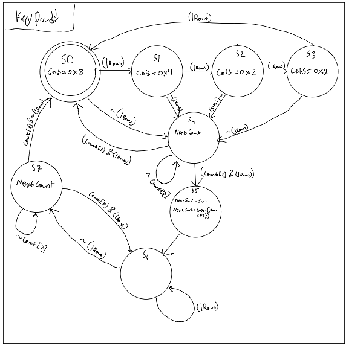
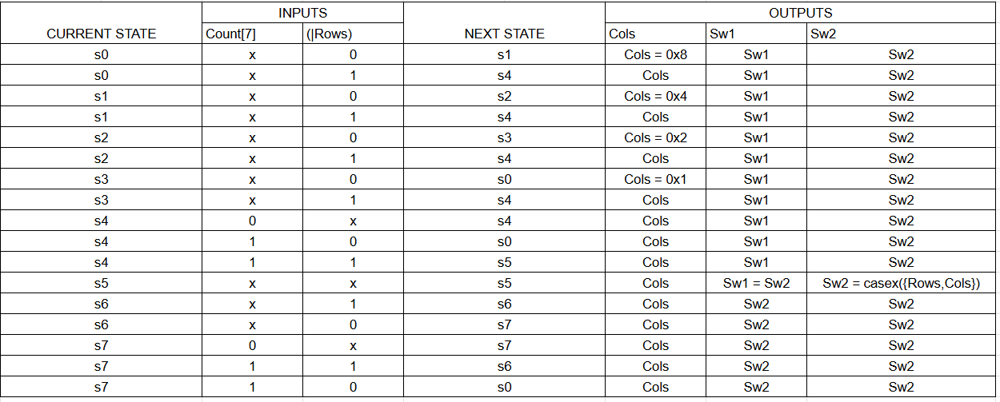
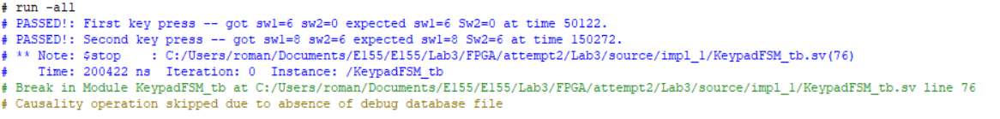
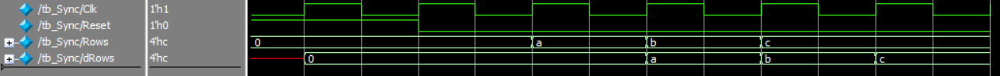

Lab 3: Keypad Scanner
Introduction
This lab focuses on designing a robust interface between an FPGA and a common external input device: the 4x4 matrix keypad. The digital system that actively scans the keypad’s columns and reads the rows to detect and identify a single key press.
A primary challenge in this lab is managing the physical imperfections of mechanical switches and asynchronous design. The design needs to implement a “debouncing” circuit to handle the noisy signal, known as switch bounce, that occurs when a key is pressed. This ensures that a single physical press is registered as exactly one digital event. The button value will store and display the two most recent hexadecimal values pressed on a time multiplexed dual seven-segment display.
Technical Documentation:
The source code can be found on my GitHub
Schematic

Figure 1 shows the schematic of the implemented design.
Block Diagram

Figure 2 shows the top level Block diagram. For a more detailed explination of the Disp Mux module please visit Lab2.
FSM Diagram/Table

Figure 3 shows the FSM transaction diagram for the Keypad FSM module shown in Figure 2.

Testbench Results
Keypad FSM results

Figure 5 shows that the Keypad was able to succesfully assign the correct values to the hexadecimal display based on a couple of button presses.

Figure 6 show Column scanning stops when a button is pressed preventing double pressing of the same button press.

Figure 7 shows that the sync module was checked to make sure all of the inputs were delayed by two cycles for various row values. They all passed.

Figure 8 shows the delay of the syncronizer visually on waves.

Figure 9 shows that the switch outputs are expected compared to the keypad FSM and it works with the addition of the syncrononizer.
For the Dual Seven Segment Display module you can find that in Lab2.
Challenges
In FPGA design, a synchronizer is a digital circuit used to safely pass a signal from one clock domain to a different, asynchronous clock domain. This process is essential for preventing a phenomenon called metastability.
Metastability is an unstable, intermediate state where a flip-flop’s output is neither a logic ‘0’ nor a ‘1’. This happens when the input signal changes too close to the clock edge, violating the flip-flop’s setup or hold time. A synchronizer’s job is to give any potential metastability time to resolve to a stable ‘0’ or ‘1’ before the rest of the logic in the new clock domain uses the signal, thus preventing system-wide errors.
Adding support for asynchronous inputs was much more challenging than expected. I chose to use a simple syncronizer for each Row input which was just two flip flops in series. While the approached worked in this example it is genreally not recomended for multi-bit signals. This is because while it gaurentees a stable output, it does not gaurentee that all the bits arrive at the same time. So the data recieved may be out of order. This is best used for single bit flags.
You could extend the 2-flop syncronizer to an n-flop syncronizer where each additional flop increases the mean time before failure (MTBF) exponentially. 3-flops guarentees practrically zero meta stability.
Other syncronizers do not apply to this specific case of the button. Other syncronizers between different clock domains require call and responses such as handshakes or FIFO buffers (such as SPI). The button is much more simple and does not need a complex syncronizer.

Firgure 11 shows my state transition logic for the scanner part of the fsm at state 1. NextState should be s4 since I OR reduced my row column to check if any key was pressed. But it shows that the hardware transitions to s2 (the second scanning state), and then it moves to the debouncer with the wrong column value. Adding a clock divider to slow down the FSM fixed this issue.
Results and Discussion
Overall the design was able to meet all of the design constraints. Each button press is registered once and while one button is pressed the display is latched untill the button is released ( other presses are ignored while another button is pressed). When two buttons in the same row are pressed in the same debounce cycle a priority encoder takes the largest of the two.
Time spent on the lab: 30 hours
The video of the working set up can be found below.

AI Prototype Reflection
LLM prompt A fed to Gemini:
Target device: Lattice iCE40 UP5K FPGA with internal high-speed oscillator (~20 MHz). Write synthesizable SystemVerilog to scan a 4x4 matrix keypad and display the last two hex keys pressed on a dual 7‑segment display. Implement: A clock divider that derives a scan clock on the order of 100–200 Hz from the internal oscillator. A keypad scanning controller that iterates one active‑low column at a time and samples active‑low rows, registering at most one key per press (debounce‑by‑design), ignoring additional presses while any key is held, and allowing a new registration only after release. A top level that updates two hex digits (older and most recent) when a new key is registered and drives a time‑multiplexed two‑digit 7‑segment display without visible flicker and with balanced brightness.Use idiomatic SystemVerilog (e.g., logic, always_ff, enumerated states for FSMs). Provide clean module boundaries and keep all state synchronous. Include brief comments explaining the design choices.
Compare to breaking the problem down into multiple prompts
Prompt B1:
Target device: Lattice iCE40 UP5K FPGA. Overall Goal: Write SystemVerilog to scan a 4x4 matrix keypad and display the last two hex keys pressed on a dual 7 segment display. Current Goal: Write a synthesizable SystemVerilog module that produces a one‑shot registration signal for the keypad system. Behavior: When a key press is first detected, capture the current key code and assert a single‑cycle “new key” pulse. While any key remains pressed, do not accept additional keys. Only after keys are released should a subsequent press be recognized. This should handle debouncing of the keys. Implement as a small synchronous FSM with enumerated states and glitch‑free outputs. Keep names and interfaces reasonable; do not assume any hidden modules beyond what you define here.
Prompt B2:
Target device: Lattice iCE40 UP5K FPGA. Write a synthesizable SystemVerilog module that cycles through keypad columns (active‑low, one at a time) and samples rows (active‑low) to detect a single key at a time. Behavior: Iterate columns at a suitable scan rate derived from the divided clock and sample rows. When a key is detected, report a stable key code consistent with a standard 4x4 keypad layout and maintain it while the key remains pressed. Provide a boolean signal indicating whether any key is currently pressed. Use clean state encoding and synchronous logic; avoid combinational feedback and latches.
Prompt B3:
Target device: Lattice iCE40 UP5K FPGA with internal oscillator as the root clock source. Write a top‑level SystemVerilog module that instantiates the scanner and one‑shot modules, shifts the last two keys (older ← most recent; most recent ← new), and drives a multiplexed two‑digit seven‑segment display. Requirements: Update the displayed digits only when a new key is registered. Ensure equal apparent brightness and no visible flicker. Keep all logic synthesizable and synchronous; use idiomatic SystemVerilog constructs. Provide any small clock‑enable or divider logic you need. You can also assume that a sevenSegment module exists that takes a 4 bit input and outputs the 7 segments.
Both of the prompts generated verilog files that at first glance look reasonable to implement. However, I’m sure there are a lot of minor bugs. Prompt A seemed to be better at producing more structured files since I assume it was able to breakdown the complex problem into categories it deemed acceptable. Prompt B on the other hand had to follow a specific structure. Both of the prompts had a very cluttered top module.
I tried feeding gemini my modified files. I removed the top module’s clock divider feeding into the keypadFSM and instead fed it the internal oscillator as a clock. This caused a racing condition where the next state would not transition correctly based on the inputs. Gemini was not able to understand why this was causing an issue and it lacked the understanding of how the code is compiled into hardware.
I assume there are other very small bugs that lead to timing that is slightly off throught this code. But the general logic of how you would apporach this problem given the prompts is solid and can be a great starting point.